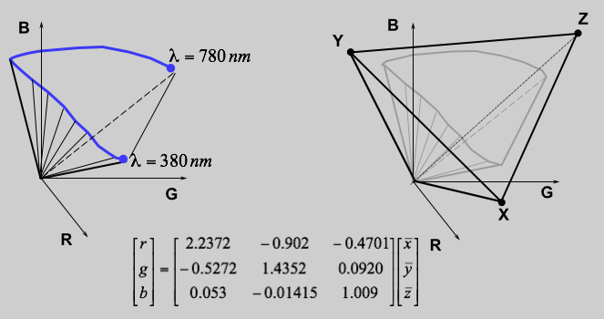

Wallas H. S. Santos
Gamut de Cores
Introdução
O Gamut de cores é uma representação gráfica de um espaço de cor. Dentre os espaços e cores podemos destacar o CIE XYZ e CIE RGB. O espaço de cor CIE RGB descreve a cor como uma decomposição de três cores primárias puras (vermelho, verde e azul). O CIE XYZ é um espaço de cor resultado de uma transformação do CIE RGB de tal forma que as curvas de componente entre o tri-estimulo para um dado comprimento de onda tivesse somente valores positivos no espectro visível (~380 - 740 nm).
Esta página tem como objetivo apresentar um software que plote os Gamut de Cores em um gráfico 3D para as bases CIE XYZ e CIE RGB.
Ferramentas
Software desenvolvido em C++ utilizando o framework QT para criar contexto OpenGL e tratamento de eventos.
Fundamentação
O problema consiste em criar dois gráficos com Gamut nas bases CIE XYZ e CIE RGB através de espectros de reflexão. O espectro de reflexão deve ser gerado a partir de cores ótimas pelo método apresentado por Perales et al (vide referências).
Segundo Perales et al. existem dois tipos de espectro de reflexão para cores ótimas. Os tipos são vale e montanha, os quais são ondas quadradas com amplitude 1 (vide Figura 1).
Figura 1. Dois tipos de espectro de reflexão. A esquerda tipo montanha e a direita tipo vale.
A Figura 2 Apresenta os dois algoritmos para gerar o espectro de reflexão dos dois tipos. O algoritmo encontra conjunto de pares contidos no espectro visível que vão definir o espectro de reflexão para um dado iluminante. No caso deste trabalho o iluminante utilizado será o D65.
Figura 2. A esquerda o algoritmo para gerar espectro de reflexão de cores ótimas do tipo montanha e a direita do tipo vale.
Uma vez encontrado os espectros de reflexão para as cores ótimas. É possível calcular o XYZ de cada um pelas equações da Figura 3. A distribuição S representa o espectro de reflexão, I o iluminante e x,y e z funções CIE para um observador padrão.
Figura 3. Cálculo de XYZ para espectro de reflexão.
*No encoding desta página houve dificuldades em representar os símbolos corretamente. Os símbolos dass funções x,y e z devem conter a "barra" em cima. Além de representar em função de "lambda".
Desenvolvimento
No início do software deve-se gerar todos os XYZ do Gamut baseado na fundamentação dada. O próximo passo é plotar estes ponto em um gráfico 3D. Para este trabalho foi adotado o OpenGL utilizando shaders. As coordenadas XYZ são armazenados em um buffer de vértices seguindo a api do OpenGL.
Através das coordenadas de CIE XYZ é possível converter para outras bases. Dentre elas temos o CIE RGB, como um segundo passo do trabalho. A conversão de base pode ser feita através de uma multiplicação por matrizes como apresentado na Figura 4.

Figura 4. Mudança de base de XYZ para RGB.
No intuito de otimizar renderização dos Gamuts, foi desenvolvido dois shaders específicos para esta aplicação. No programa de vértice a coordenada CIE XYZ é multiplicada pela matriz de conversão de coordenadas local para câmera. Se for necessário converter de CIE XYZ para CIE RGB, basta multiplicar a matriz MVP pela matriz de conversão apresentada anteriormente. Além do cálculo desse cálculo para atribuir a posição na viewport, a coordenada é enviada também para o programa de fragmentos.
// vertexShader.vsh
attribute highp vec3 vertexPosition;
uniform highp mat4 MVP; // Multiplicado pela matriz de conversão de CIE XYZ para CIE RGB
varying highp vec3 colorPosition;
void main(void)
{
colorPosition = vertexPosition;
gl_Position = MVP * vec4(vertexPosition,1);
}
Dentro do programa de fragmentos é computado a cor desse ponto. A função corCIEXYZtosRGB é utilizada para converter a coordenada CIE XYZ para uma cor que seja possível visualizar no mesmo espaço de cor do monitor do computador (sRGB). Esta função recebe como parâmetro a coordenada que foi passado pelo shader de vértice anteriormente. A vantagem de realizar esse cálculo no shader é de reduzir a quantidade de informações que são passadas para GPU. Caso contrário seria necessário realizar o cálculo da cor em pré processamento e armazenar em um buffer de cor, resultando mais 3 floats para cada ponto do Gamut. Então, o volume de dados seria duplicado podendo sobrecarregar o sistema ou reduzir a quantidade de pontos para construir a superfície do Gamut. Vale destacar que é possível que nessa conversão gere valores fora da faixa de valores do rgb (0.0 a 1.0). Nesse trabalho esse erro foi ignorado e o valor gerado foi enviado para ser truncado pela placa gráfica.
// fragmentShader.fsh
varying highp vec3 colorPosition;
float gamma_sRGB(float x){
float ft;
float t = (x>0.0)?x:-x;
if (t>0.0031308)
{
ft = 1.055*pow(t,1.0/2.4)-0.055;
}
else
{
ft = 12.92*t;
}
return (x>0.0)?ft:-ft;
}
vec4 corCIEXYZtosRGB(vec3 XYZ)
{
vec3 color;
color.r = 3.2404542*XYZ.x - 1.5371385*XYZ.y - 0.4985314*XYZ.z;
color.g =-0.9692660*XYZ.x + 1.8760108*XYZ.y + 0.0415560*XYZ.z;
color.b = 0.0556434*XYZ.x - 0.2040259*XYZ.y + 1.0572252*XYZ.z;
color.r = gamma_sRGB(color.r);
color.g = gamma_sRGB(color.g);
color.b = gamma_sRGB(color.b);
return vec4(color,1);
}
void main(void)
{
gl_FragColor = corCIEXYZtosRGB(colorPosition);
}
Resultados
Na Seção Recursos tem códigos fonte e um binário para windows disponível para verificar o desenvolvimento e resultados do software. No software, a mudança de modo CIE XYZ e CIE RGB podem ser feitas teclando 1 ou 2 respectivamente. A seguir imagens do software resultante.
Gamut de cores CIE XYZ com D65
Gamut de cores CIE RGB com D65
Recursos
Código fonte disponível no Github e em zip.
https://github.com/wallashss/ColorGamut.git
Binário para Windows 32 bits.
Referências
http://www.brucelindbloom.com/
Perales Romero, Esther, et al. "A new algorithm for calculating the MacAdam limits for any luminance factor, hue angle and illuminant." (2005). [pdf]
QT Framework. http://qt-project.org/